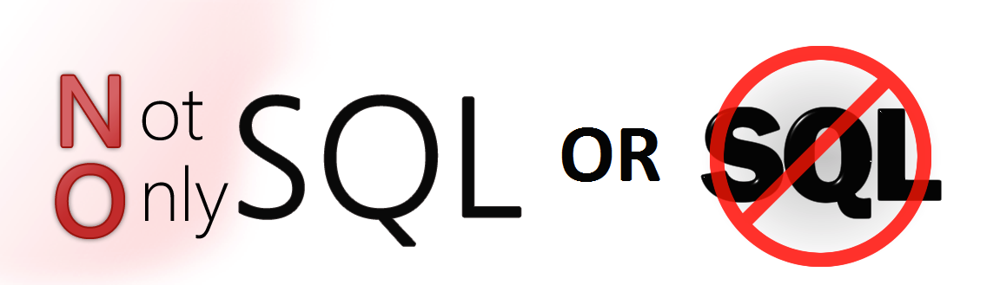

SQL databases are primarily called as Relational Databases (RDBMS); whereas NoSQL database are primarily called as non-relational or distributed database. NoSQL as a term has been coined by Carlo Strozzi's when he created a "NoSQL" relational database. NoSQL databases and RDBMS could and should work together in modern applications. Enterprises such as Facebook, Foursquare, Forbes, Disney and Craigslist deploy and decide when to use NoSQL databases and RDBMS technologies to provide the best user experience for their users. Most well-rounded modern software programs will employ both RDBMS and NoSQL technologies and work alongside for optimal outcomes. SQL databases are table based databases whereas NoSQL databases are document based, key-value pairs, graph databases or wide-column stores. This means that SQL databases represent data in form of tables which consists of n number of rows of data whereas NoSQL databases are the collection of key-value pair, documents, graph databases or wide-column stores which do not have standard schema definitions which it needs to adhered to. SQL databases have predefined schema whereas NoSQL databases have dynamic schema for unstructured data.
SQL databases are vertically scalable whereas the NoSQL databases are horizontally scalable. SQL databases are scaled by increasing the horse-power of the hardware. NoSQL databases are scaled by increasing the databases servers in the pool of resources to reduce the load. SQL databases uses SQL ( structured query language ) for defining and manipulating the data, which is very powerful. In NoSQL database, queries are focused on collection of documents. Sometimes it is also called as UnQL (Unstructured Query Language). The syntax of using UnQL varies from database to database.
I know that NOsQL is new and growing into its own, this makes it very attractive. As someone who is very interested in agile and scalable we development, I am growing a an interest in databases that are when compared to relational databases, NoSQL databases are more scalable and provide superior performance, and their data model addresses several issues that the relational model is not designed to address:
NoSQL databases offer an alternative to traditional relational databases but is immature and will introduce more risks. The burgeoning use of NoSQL databases within the enterprise has given users better scalability and flexibility with how they store data and how applications tap into those stores, but security experts warn that there are some serious security considerations to take into account when diving headfirst into a deployment of such an immature technology. NoSQL is designed to be deployed at Internet scale, it's also more likely to be directly attached to the Internet and thus may be subjected to a far greater number of Internet scale attacks, "Ironically, the advances in database application security in recent years have very little to do with databases themselves," says Oliver Lavery, director of security research and development for nCircle. "Programming languages and frameworks like ASP.NET, Django, Ruby on Rails, etc. have evolved better language support for building database queries that prevent mixing query code with data and this provides the only strong safeguard against injection attacks."